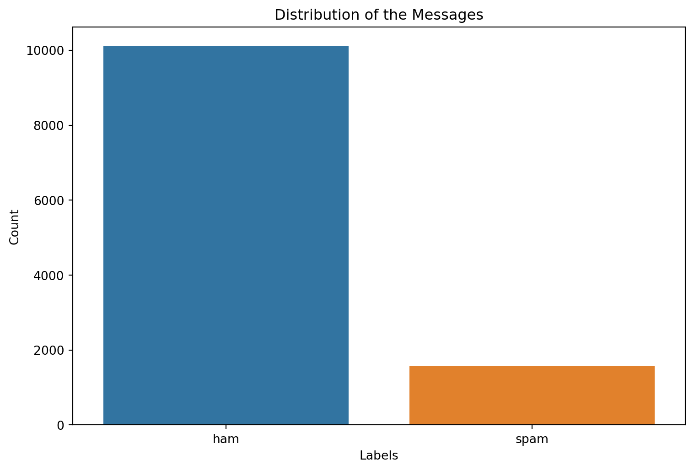
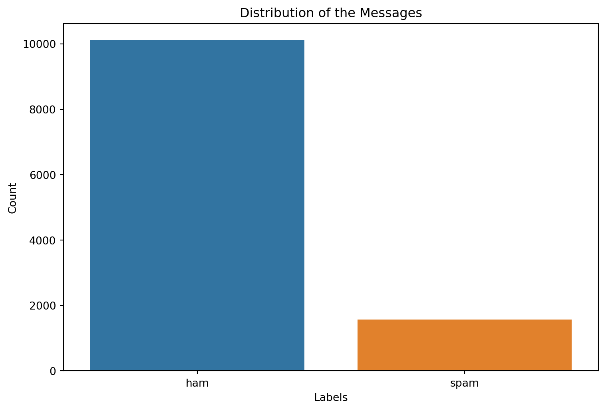
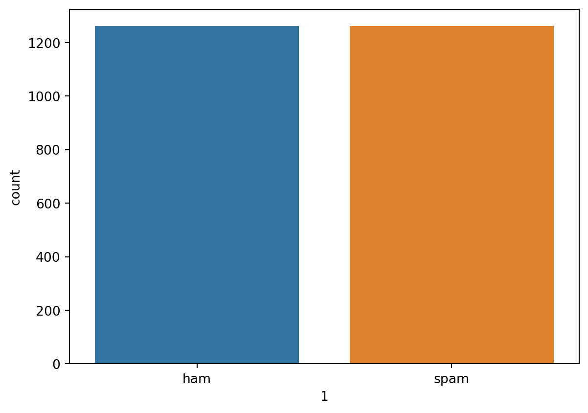
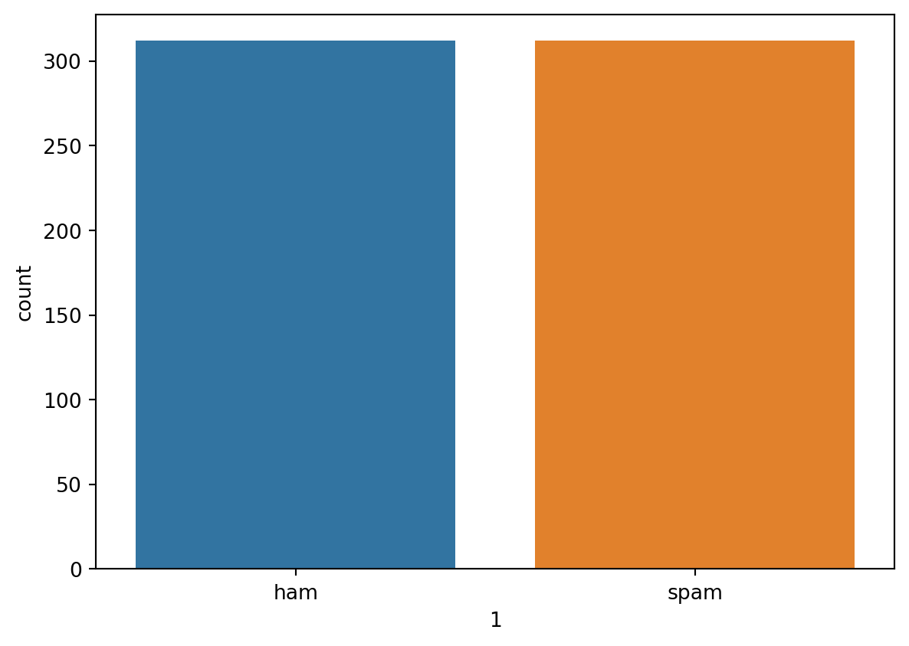

Code
# plot the distribution of the examples in each class
plt.figure(figsize=(10,7))
sns.countplot(x='label', data=sms_big)
plt.title('Distribution of the Messages')
plt.xlabel('Labels')
plt.ylabel('Count')
plt.show();
This report illustrates the fundamental phases of the project, from data preprocessing to deployment using pyrogram library to build a working Telegram Bot capable of using the ML model generated to monitor the messages within a groupchat, and flag any messages that are considered potential spam.
This capstone project addresses the problem of spam messages being sent out via various users to public groupchats. A possible solution has been built in this project, in which a deep learning model was trained on sms messages, labelled as either spam or not, and then used in a Telegram bot to detect incoming spam messages in the deployed Telegram groupchats.
The data for this project was gathered from 4 various sources:
After getting the data from their sources, they were all concatenated together, dropping the resulting duplicates, to finally be left out with a large volume of data, totalling at around 11K examples, with the following data description:
| Feature | Description |
|---|---|
| message | the sms message in text form |
| label | the classification of the message, either spam, or not, ham |
However, the data was heavily imbalanced, especially in the original sources, where the data with label ham were by far the dominating example in the dataset. See Figure 1.
# plot the distribution of the examples in each class
plt.figure(figsize=(10,7))
sns.countplot(x='label', data=sms_big)
plt.title('Distribution of the Messages')
plt.xlabel('Labels')
plt.ylabel('Count')
plt.show();
To solve this imbalance problem, 2 methods were tried (after performing train-test split):
The idea was to use SMOTEN method from imblearn package to successfully oversample the ham class. Upon creating the SMOTEN instance, and applying it to our data sets, the classes became balanced. However, the minority class was almost three times filled with duplicates, which is extremely unwanted in our data, especially when we proceed to model development, as the model will no doubt overfit the data and will not generalize well on unseen data.
As a result, the next method was tried.
In performing undersampling for the majority class, we used the RandomUnderSampler method from imblearn, and then applied it on the data sets. Even though many examples from the ham class were truncated and left off to perform undersampling, this is still better in this case than having a spam class consisting of almost all duplicates.
As a result, the total number of examples left went down from about 11K to about 3K. Figure 2 and Figure 3 depict the distribution of the data in train and test sets respectively.
# training data after undersampling
X_res, y_res = unders.fit_resample(np.array(X_train).reshape(-1,1), np.array(y_train).reshape(-1,1))
X_train_res = pd.Series(X_res.reshape(-1))
y_train_res = pd.Series(y_res.reshape(-1))
train_df = pd.concat([X_train_res, y_train_res], axis=1)
sns.countplot(x=1, data=train_df);
# testing data after undersampling
X_res, y_res = unders.fit_resample(np.array(X_test).reshape(-1,1), np.array(y_test).reshape(-1,1))
X_test_res = pd.Series(X_res.reshape(-1))
y_test_res = pd.Series(y_res.reshape(-1))
test_df = pd.concat([X_test_res, y_test_res], axis=1)
sns.countplot(x=1, data=test_df);
After splitting the data, and fixing the imbalance problem in the right way, we can proceed to the next phase of the preprocessing, whcih is Text Tokenization.
Now, we must convert our categorical data, i.e the message and the label, into numerical data, as the deep learning models cannot handle text data, it needs to be converted to numbers. For the label, we can easily convert them to numerical data through using LabelEncoder frok sklearn package. After doing so, the result of applying the LabelEncoder looks like this:
print(f"Before applying LabelEncoder: {y_train_res[:5]}")
# apply label encoder to transform the caategorical target variable
le = LabelEncoder()
y_train_res = le.fit_transform(y_train_res)
y_test_res = le.fit_transform(y_test_res)
print(f"After applying LabelEncoder: {y_train_res[:5]}")Before applying LabelEncoder: ['ham' 'ham' 'ham' 'ham' 'ham']
After applying LabelEncoder: [0 0 0 0 0]Next, we will need to first apply a Text Vectorizer on our message feature, and then initialize an embedding layer to be used during our experimenting with model building. The Text Vectorizer applied in this case assigns a unique number to each word (word-level tokenization) in the message feature, i.e the text corpus, where each word in this case is considered a token. Both the text vectorizer, along with the embedding, are used from the tensorflow deep learning package. After applying the text vectorization on the data, and initiating an embedded layer to be used later on, this is the result attained:
print(f"Original message:\n{X_train_res[0]}\n\nVectorized version:\n{text_vectorizer([X_train_res[0]])}\n\nEmbedded version:\n{embedding(text_vectorizer([X_train_res[0]]))}")Original message:
Siva is in hostel aha:-.
Vectorized version:
[[4008 11 17 1973 3294 0 0 0 0 0 0 0 0 0
0 0 0 0 0]]
Embedded version:
[[[ 0.02200227 -0.01599157 -0.00930061 ... -0.03341048 0.00564108
0.01683377]
[ 0.03493765 0.02574939 0.01934611 ... -0.03716522 -0.0358008
-0.01889654]
[-0.03314358 -0.03072366 0.03508325 ... -0.00579571 0.00953389
-0.00786076]
...
[-0.01161405 -0.01339437 0.04116846 ... -0.01781211 -0.03352024
0.01839701]
[-0.01161405 -0.01339437 0.04116846 ... -0.01781211 -0.03352024
0.01839701]
[-0.01161405 -0.01339437 0.04116846 ... -0.01781211 -0.03352024
0.01839701]]]